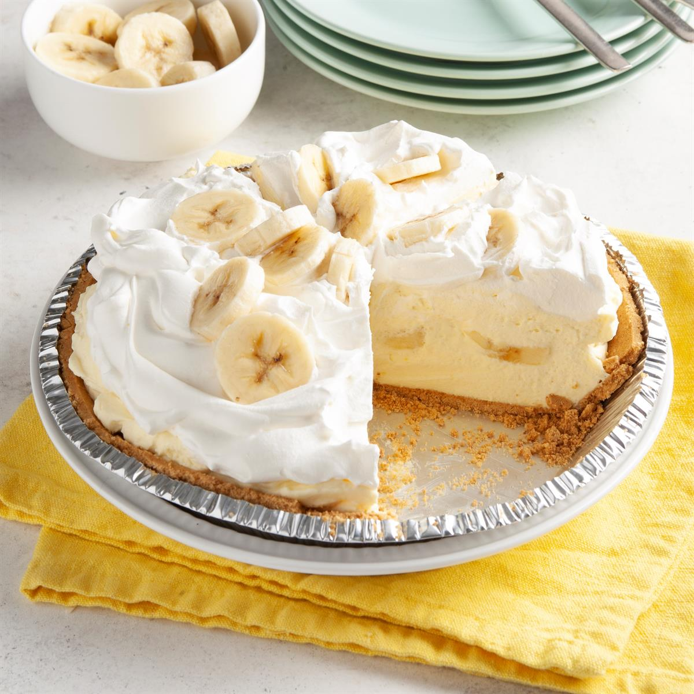

Banana Cream Pie

Description
This banana cream pie recipe makes a great pie. This pie is one of the
yummiest things on earth.
Ingredients
- 3/4 cup white sugar
- 1/3 cup all-purpose flour
- 1/4 teaspoon salt
- 2 cups milk
- 3 egg yolks, beaten
- 2 tablespoons butter
- 1 1/4 teaspoons vanilla extract
- 1 (9 inch) baked pastry shell, cooled
- 4 bananas, sliced
Steps
- Preheat the oven to 350 degrees F (175 degrees C).
-
Combine sugar, flour, and salt in a saucepan. Gradually stir in milk.
Cook, stirring constantly, over medium heat until mixture boils and
thickens. Continue to stir and cook for 2 more minutes, then remove from
the burner.
-
Place egg yolks in a medium bowl. Whisk in a small amount of hot
mixture, then immediately add egg yolk mixture to remaining hot mixture.
-
Return the saucepan to the burner and cook, stirring constantly, for 2
more minutes. Remove the saucepan from the stove; stir in butter and
vanilla.
- Fill pastry shell with sliced bananas. Cover with pudding.
- Bake until filling sets, 12 to 15 minutes.
- Chill pie for 1 hour before serving.